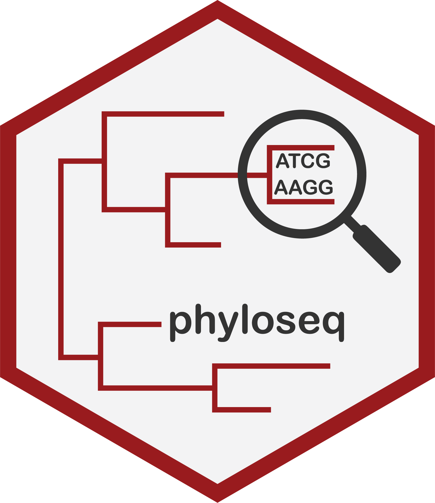
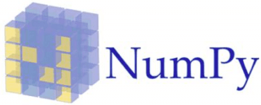

About me
print("Hello World")
Hi! I am William, a Biotechnologist that was pulled to the Data Science World. As a undergrad kiddo I began a
undergraduate project with scripting in R to generate a report of microbiota data analysis. That's where
I discovered the power of data for insights. Since then, I have developed my career towards molecular biology,
bioinformatics and data science. I worked on projects from artisanal cheeses microbiota analysis to gut
metagenomic in my PhD. I’m now looking for a position in which I can leverage my technical background to tackle
diverse data challenges and contribute to reach excellent results as a data scientist/analyst.
What i'm doing
-
Statistical Analysis
With data in hands, I use R and it's almighty packages for data wrangling and statistical analysis such correlation, hypothesis testing, linear regression and data summarization.
-
Data Visualization
Data visualization is one of the coolest thing Data Scientists and Analysts can do to show how hundreds or thousands of data points can be transformed and shown into fantastic visualizations.
-
Machine Learning
Machine learning algorithms are robust and can be used to show patterns in a given dataset and be used to predict the outcome of a variable in a sample if given a robust dataset with a well designed model.
-
Bioinformatics
Got ACTGs from 16S sequencing?
• Transform 16S sequencing data into ASV Table;
• Use Picrust2 to make functional profilling of your dataset;
• Or any other tool you'd like to use.
Some tools used:
-

- 
-

-

- 
-

-